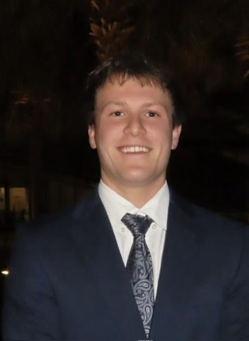

Graduation with Leadership Distinction · Research Pathway
Technology should fit the business, not the other way around.
- Pathway
- Research
- Major
- Computer Information Systems
- Graduating
- May 2027
- Hometown
- Raleigh, NC

About Me
My name is Wade Little. I am from Raleigh, North Carolina, and I am a senior Computer Information Systems (CIS) student at the University of South Carolina pursuing Graduation with Leadership Distinction through the Research pathway. I am extremely excited to graduate in May 2027 and return to Raleigh! My time at USC has been defined by living in Capstone my freshman year, joining a social fraternity my sophomore year, contributing to research in Dr. Thorsten Wuest’s Future Factories lab, and competing in pitch and sales competitions across campus. As a natural introvert and a doer, I used my time at USC to step out of my comfort zone, build meaningful relationships, and develop innovative ideas and businesses that make an impact. As a person, I spent my time loving, learning, and appreciating every moment. Through the ups and downs, I am eternally grateful for my time at USC.
As a child, I grew up between divorced parents who were constantly at odds. Every week, I packed a bag and moved to the other house. My dad, a self-taught software engineer, showed me what hard work, resilience, and dedication can do for a life. He was always learning, present, and supportive, and his home was a peaceful place. Every other week, I went to my mom’s, where home often meant hard labor, stress, and fear rather than safety. There was no perfect picture to follow, so I had to decide for myself what was right. Authenticity, love, and patience became my way forward, and while I am not perfect, they are the traits I strive to live by. All of these experiences, good and bad, have taught me to appreciate life, love hard, and work diligently.
I am grateful to Dr. Alsharif at the University of Alabama for believing in me first, and to Dr. Wuest soon after. Together, they introduced me to cybersecurity and financial technology research and gave me a pathway to succeed. My team lead at Deutsche Bank, Sumit Bahl, taught me what strong leadership looks like. Even though he was not a manager (and did not want to be), he was a strong, supportive voice for everyone he worked with. He reinforced the importance of a strong support system and positive affirmations. I am also thankful to my classmate Dylan Bawa for pushing me to join CSIET and get involved in USC’s sales community. She pushed me out of my comfort zone and helped me develop the soft skills that matter so much today. Finally, Paul Daniele took a chance on me and gave me the opportunity to help grow Palmetto Advisors Group, where I use my skills to help small businesses grow.
My Key Insights
Abstraction and reusability are the keys to a consumer’s heart.
In CSCE145 and CSCE146, I learned the engineering best practices and pillars of object-oriented programming that I later applied while building high-volume trading software at Deutsche Bank.
Read Key Insight 1 → 02Everything is a process, and you’re always selling.
The C.A.S.H.U. sales process from MKTG457 guided my work as CSIET’s Director of Employer Outreach, where I helped secure two partnerships worth $25,000.
Read Key Insight 2 → 03Practice creates competence, and competence creates confidence.
During my NSF REU at the University of Alabama, I read one paper 50 times and rehearsed until I could present our published research solo at a conference in Houston.
Read Key Insight 3 →